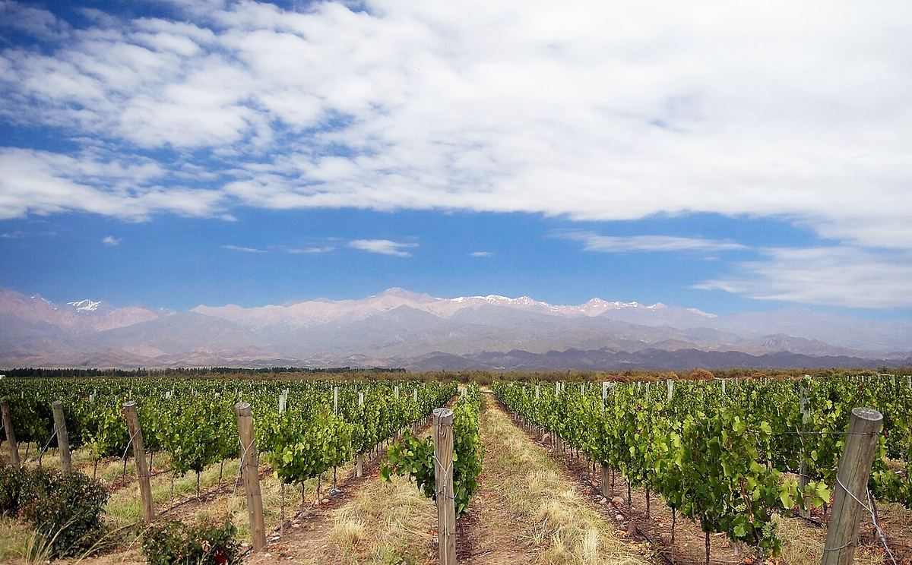

TINTO
Mendoza es la principal provincia vitícola de Argentina y concentra la mayor parte del viñedo del país. Sus oasis regados al pie de los Andes son la tierra de la Malbec por excelencia.

La ciudad de Mendoza fue fundada en 1561 por expediciones procedentes de Chile, y la vid se cultivó desde los primeros tiempos coloniales gracias a un sistema de acequias heredado en parte de los pueblos originarios huarpes. En 1853 se creó en la ciudad una Quinta Normal de agricultura, donde el agrónomo francés Michel Aimé Pouget introdujo variedades francesas, entre ellas la Malbec. La llegada del ferrocarril en 1885 y la inmigración europea transformaron Mendoza en un gran polo vitivinícola orientado al mercado nacional. Desde los años noventa, la provincia ha sido el escenario principal de la modernización del vino argentino.
El clima es continental y desértico, con precipitaciones escasas, concentradas en verano, y una insolación muy elevada. La viticultura depende del agua de deshielo de los ríos Mendoza, Tunuyán, Diamante y Atuel, distribuida por una red de canales. La altitud de los viñedos, que va de unos 500 a más de 1.500 metros, modera el calor y acentúa la amplitud térmica entre el día y la noche. El granizo, las heladas y el viento zonda son los principales riesgos.
Predominan los suelos aluviales, pobres y permeables, de arena, limo, grava y canto rodado, cuya composición cambia mucho de una finca a otra según la cercanía a los antiguos cauces. En algunas zonas de altura aparecen costras y depósitos calcáreos.
Suelen distinguirse cinco grandes áreas: la zona Norte, cerca de la capital; la Primera Zona o zona alta del río Mendoza, con Luján de Cuyo y Maipú; el Valle de Uco, al sur y a mayor altitud, con Tupungato, Tunuyán y San Carlos; la zona Este, la más extensa y productiva, con departamentos como San Martín, Junín y Rivadavia; y la zona Sur, con San Rafael y General Alvear. Dentro de ellas existen numerosas Indicaciones Geográficas y dos Denominaciones de Origen Controladas, Luján de Cuyo y San Rafael.
La Malbec es la variedad estrella y se elabora en todos los estilos, desde tintos jóvenes y frutales hasta vinos de parcela criados en barrica o en hormigón. También tienen importancia la Bonarda, la Cabernet Sauvignon, la Cabernet Franc y la Syrah, así como blancos de Chardonnay, Sauvignon Blanc y Torrontés. Las uvas criollas, como la Cereza o la Criolla Grande, siguen muy presentes en la zona Este para vinos de consumo corriente y mostos.